Our First Site
Follow the next steps to create your first site!! These steps are fast pace but follow them and know that we will review every component of this tutorial throughout the course.
Create a local site
- Download & install Visual Studio Code
- Create a folder with the name:
my-first-site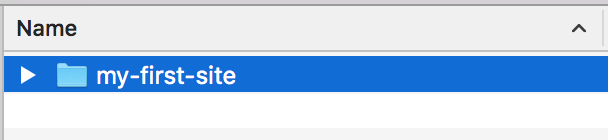 - Open Visual Studio Code 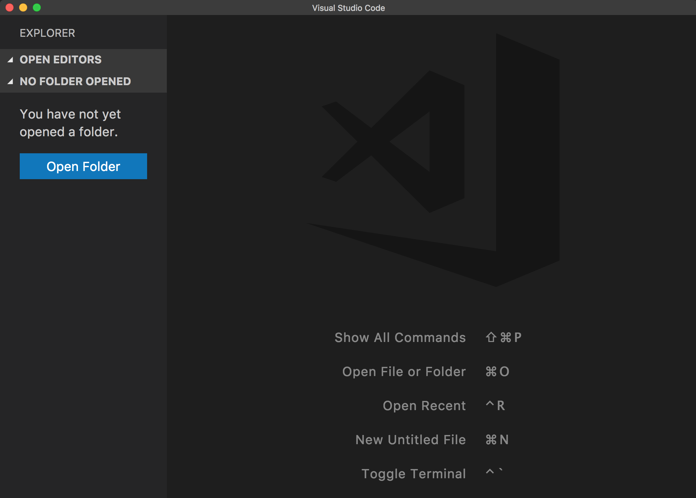
- Open my-first-site using Visual Studio Code 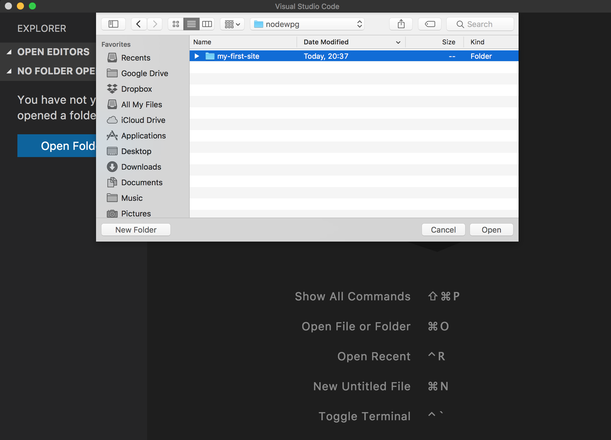
- Create the following files inside the
my-first-sitefolder :
- index.html
- style.css
- script.js 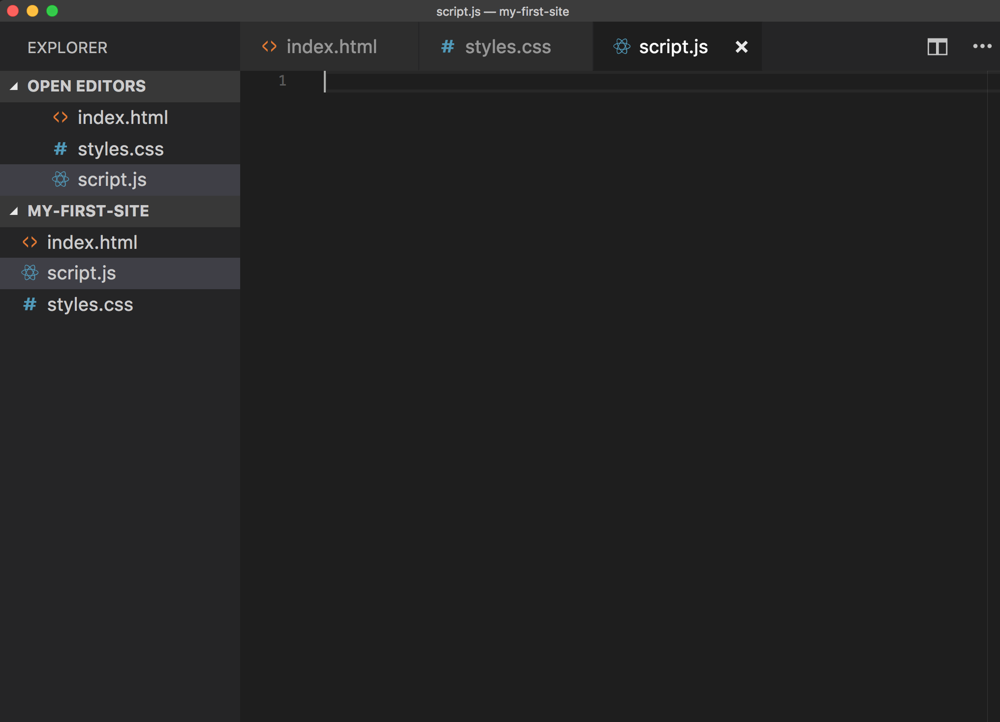
- Copy and Paste the following code on each document
index.html
<!DOCTYPE html>
<html lang="en">
<head>
<title>My First Site</title>
<link rel="stylesheet" href="style.css" />
<link rel="shortcut icon" href="favicon.ico" type="image/x-icon" />
</head>
<body>
<div>
<h1>Hello World!!!</h1>
<p>Now let's conquer the world!!</p>
<button>Click Me</button>
</div>
<script src="script.js" type="text/javascript"></script>
</body>
</html>
style.css
body {
background-color: lightgray;
font-family: Arial;
text-align: center;
display: flex;
align-items: center;
justify-content: center;
height: 90vh;
justify-content: center;
}
h1 {
font-size: 72px;
}
p {
font-size: 28px;
}
button {
color: white;
font-size: 125%;
border-radius: 4px;
border: none;
text-shadow: 0 1px 1px rgba(0, 0, 0, 0.2);
background: rgb(28, 184, 65);
padding: 10px;
outline: none;
cursor: pointer;
}
button:hover {
background: rgb(66, 184, 221);
padding: 12px;
}
script.js
window.onload = function() {
var button = document.querySelector("button");
button.addEventListener("click", function() {
alert("Let's Rock!!");
});
};
- Download the following favicon.ico to my-first-site folder
- Go to the
my-first-sitefolder and double click the fileindex.html - You should see a web page like this one: 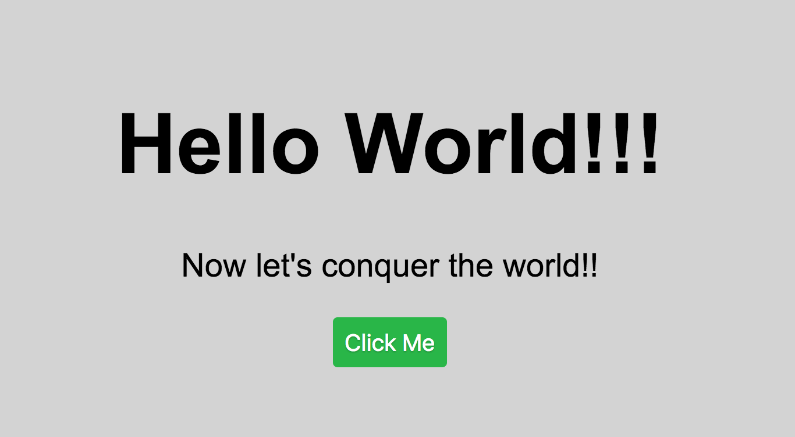
Publish our Site
At this point we created our first web but we can only access it from our computer as it's running locally. To be able to publish it we need a free hosting and a domain. For this we will use GitHub Pages. Now the next section moves quickly but we will cover Git in the next section.
- Open a browser and navigate to https://github.com/join.
- Set up your account. Pick a username that is professional since employeers will look at this account. Click "Create an account".
- Choose your subscription. Choose Free and click "Continue".
- (Optional) Tailor your experience. Fill out the details and click "Submit".
- Verify email and log into your GitHub Account.
- Create a new repository called
my-first-siteand click "Create Repository". - In Visual Studio Code, open the Integrated Terminal and make sure that you the default shell is bash. 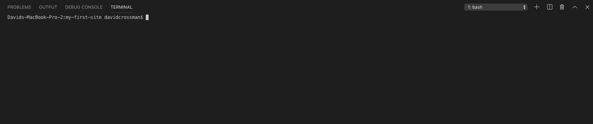
- For Windows Users, make sure the Default Shell is set to bash or Git Bash.
- Click the dropdown in the top right of the Terminal and click Select Default Shell.
- Select Git Bash as the default shell. 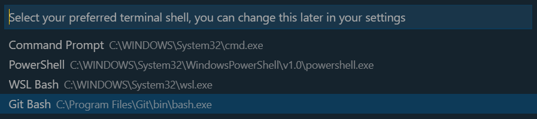
- Close and re-open the Terminal.
- For Windows Users, make sure the Default Shell is set to bash or Git Bash.
- In the Integrated Terminal, enter the following lines in the terminal replaced with your GitHub details:git config --global user.name <github userID>git config --global user.email <github email>
- In the Integrated Terminal, copy and paste the following line:git initgit add .git commit -m "my first commit"
- In GitHub, Click the copy to keyboard the commands in "…or push an existing repository on the command line" section. Make sure you have
HTTSselected to see the https commands. 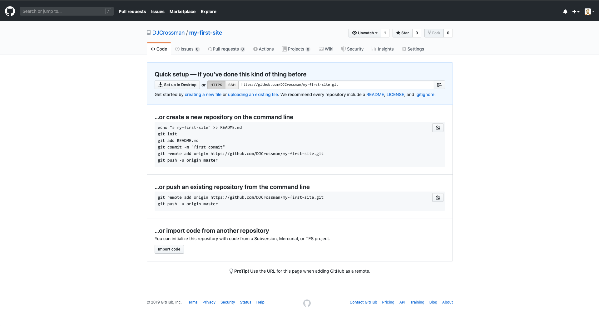 - In the Integrated Terminal, paste the copied line from the "…or push an existing repository on the command line" section. You may be required to Login using your GitHub username and password.
- The commands you are looking for is
git remote add origin https://...andgit push origin master - If you are having issues using HTTPS, use SSH instead by adding a new SSH key to your GitHub account.
- The commands you are looking for is
- Go to the repository page and refresh. You should see the files that you created. 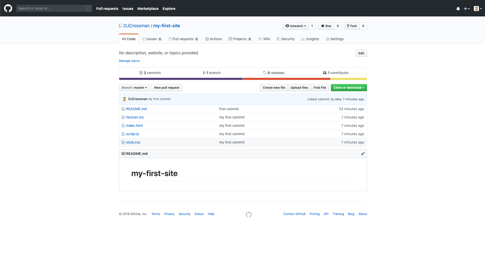
- Under your repository name, click "Settings".

- Use the "Select" source drop-down menu to select "master branch" folder as your GitHub Pages publishing source. 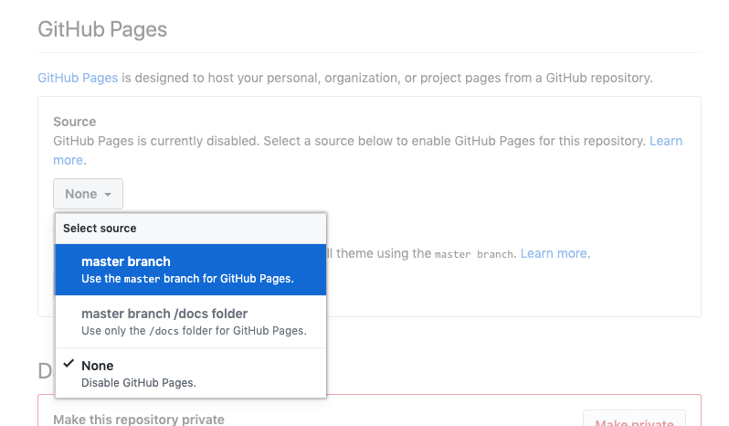
- Click the link in the GitHub pages section. 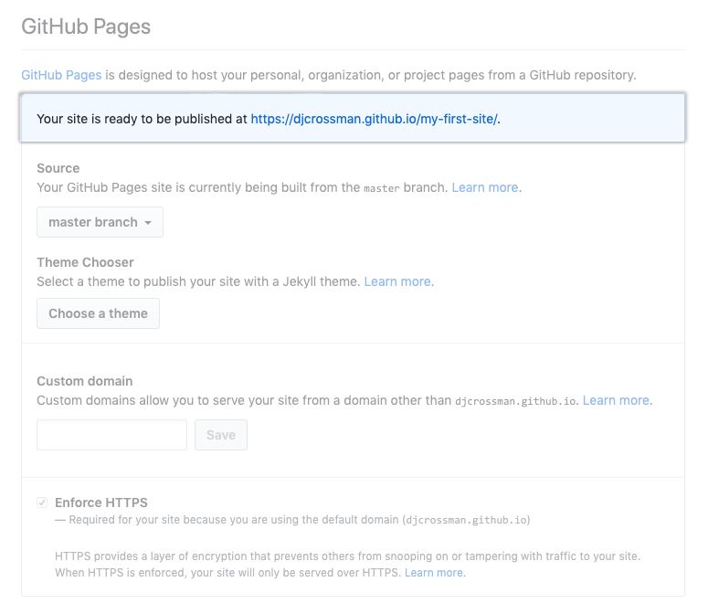
- Congratulations, you have your first site online!!

Extra
- Change the h1 and p wording (index.html)
- Set the body background-color to red (style.css)
- Refresh the local site to see the changes
- Upload the changed files to deploy the new site version
- Try to create your own version of the site